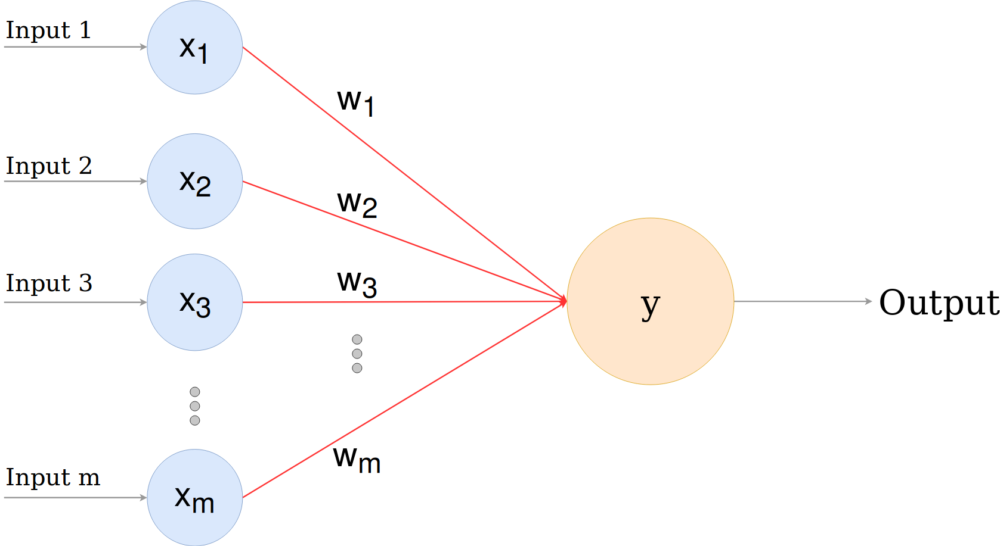

Artificial Neural Networks
Non-Linear problems
Nature example
Inspired by nature the idea of
Artificial Neural Networks
has been developed.
Neural Network Architecture
Deep Neural Networks
Activation Function
Activation functions introduce non-linearity into the network.
Sigmoid
- Sigmoid outputs values in range [0, 1]
- 0 there is no signal
- 1 there is a strong signal
Which is close model of the biological neuron.
Neuron weights
Neuron weights defined layer by layer.
Forward Propagation
Back Propagation
The idea of back propagation was proposed by
David E. Ruineihart, Geoffrey E. Hinton,
and Ronald J. Williams
In their paper Learning internal representations by error propagation in 1985
BTW
The idea of this paper was used in 1989 by LeCun for developing his LeNet architecture.
Cost function
Derivative for J
Derivative for activation
Derivative for dot product
Single sample gradient
Entire dataset gradient
Weights Update
Softmax
Architecture types
Perceptron
Convolutional Neural Networks

Other
- RNN, LSTM, etc
- GAN
- Spiking Networks
- Graph Nets
Bias-Variance Tradeoff
If bias is high (underfit): increase number of layers, increase number of parameters
If viariance is high (overfit): decrease number of layers, decrease number of parameters
Few words on how to construct your own architecture.
Such as life
tensorflow vs pytorch
Tensorflow is good for deployment.
PyTorch for prototyping.
In general, it is not about tool it is about the problem.
Log the progress
- Tensorboard
- Visdom
- Console output + log files
Train loop vs Callbacks
Callbacks
| Pros | Cons |
|---|---|
|
|
Manual train loop
| Pros | Cons |
|---|---|
|
|